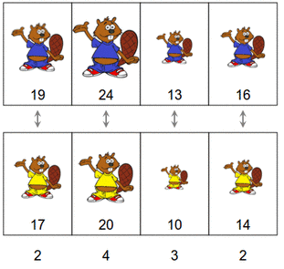
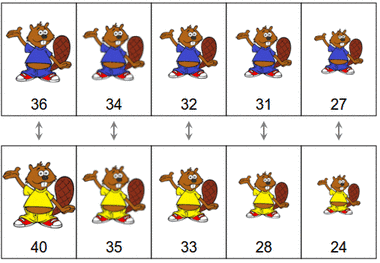

Ratkaisu
Yleispätevä ratkaisuperiaate on asettaa aina i:nneksi suurin sininen majava i:nneksi suurimman keltaisen majavan pariksi. Eli esim. ensin suurin sininen majava suurimman keltaisen majavan pariksi, sitten toiseksi suurin sininen majava toiseksi suurimman keltaisen majavan pariksi, ja niin edelleen.
Alla on kuvattu eräs mahdollinen tapa tehdä tämä. Ratkaisun erotusten summa on 11.

Edellä kuvattu ratkaisuperiaate lienee helpointa toteuttaa niin, että järjestämme kummankin väriset majavat erikseen suuruusjärjestyksiin omilla riveillään. Tämä johtaa suoraan ratkaisuun.
Myös seuraavan ratkaisun erotusten summa on 11.



Yllä kuvailtu ratkaisuperiaate voidaan todeta oikeaksi tutkimalla tilannetta, jossa ratkaisuperiaatetta ei olekaan noudatettu: tällöin löytyy sellaiset majavaparit (A, X) ja (B, Y), että A ja B ovat yhtä väriä ja X ja Y toista, ja koko(A) < koko(B) mutta koko(X) > koko(Y). Voidaan melko suoraviivaisesti osoittaa, että ratkaisu paranee, jos vaihdamme näiden majavien paritukseksi (A, Y) ja (B, X). Jos kaikki tällaiset majavaparit vaihdetaan edellä kuvatulla tavalla, päädymme tilanteeseen, jossa i:nneksi suurin sininen majava on i:nneksi suurimman keltaisen majavan pari.
Tämä on tietojenkäsittelyä!
Tehtävä on esimerkki tietojenkäsittelyn sovelluksissa yleisestä järjestystä koskevaksi optimointiongelmasta, jossa jokin datajoukko (tässä majavat) halutaan järjestää jonkin ennaltamääritetyn kriteerin (esim. tässä kokojen erotusten summan) perusteella mahdollisimman hyvällä tavalla.
Tehtävän majavien järjestämisen kohdalla helpoin tapa oli järjestää kaikki majavat jo heti alussa, mutta monissa muissa ongelmissa ei ole etukäteen tiedossa sellaista kriteeriä, minkä mukaan alkiot voitaisiin suoraan järjestää. Tällöin yksi melko yleisesti käytetty tapa ratkaisun hakemiseen on lähteä liikkeelle jostain ratkaisusta (joka ei välttämättä ole paras mahdollinen) ja yrittää muuttaa sitä vähitellen kohti parempaa ja parempaa ratkaisua. Tehtävän ratkaisun lopussa karkeasti hahmoteltu perustelu havainnollistaa tällaista tapaa: tehtävän voisi ratkaista myös "pikku hiljaa edeten" niin, että etsimme toistuvasti sellaisia majavapareja (A, X) ja (B, Y), missä koko(A) < koko(B) mutta koko(X) > koko(Y), ja vaihdamme niiden tilalle parit (A, Y) ja (B, X). Kukin tällainen vaihto parantaa ratkaisua edellistä paremmaksi. Optimointiongelmien yhteydessä voidaan sanoa, että ratkaisu tällöin vähitellen suppenee kohti parasta ratkaisua.
Katso lisää esim. https://en.wikipedia.org/wiki/Combinatorial_optimization (englanniksi).